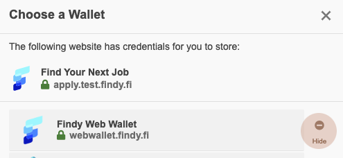

Go to webwallet.findy.fi and allow the wallet to store credentials to your browser.
Open credentials page and add the following credentials to your web wallet:
Fill in the job application form.
Instead of filling in each field manually, you can use the Use wallet button to get information from your web wallet.
You can continue using Findy web wallet for other experiments and demos. You can head out to vcplayground.org and test using different kinds of credentials. If you want to remove the web wallet functionality from your browser, invoke the wallet selector from the button below and select Hide next to Findynet web wallet in the dialog.